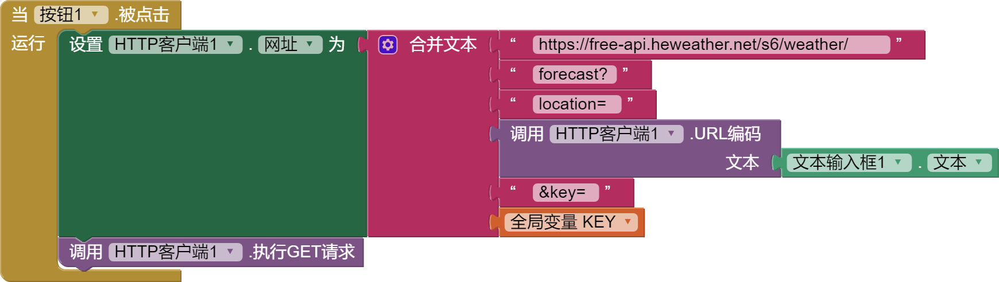
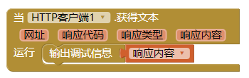
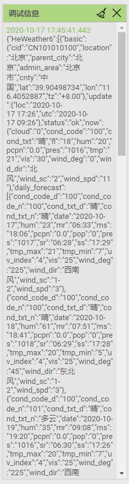
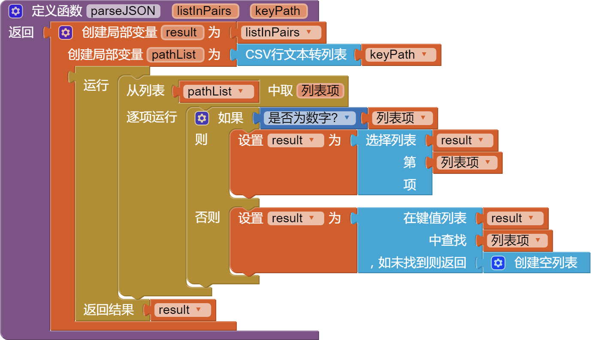
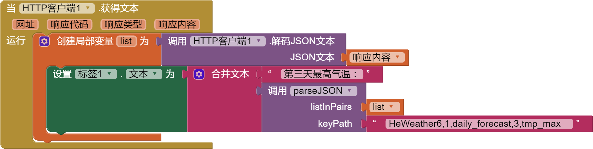
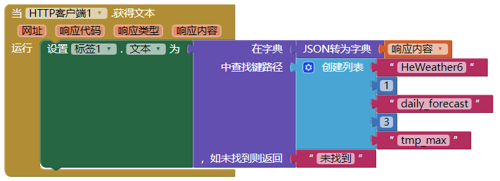

获取和风天气
应用与外界交互，使用api接口是最常见的。现在利用wxbit解释下如何获取和风天气的天气预报api。
准备工作
- 和风天气网站(https://www.heweather.com)注册账号。
- 进入控制台，应用管理，新建应用。（貌似免费用户只能建一个免费账号。）
- 记住应用的key。
组件设计
组件设计界面，拖入3个可视组件：文本输入框、按钮、标签，1个非可视组件：http客户端。（这个是wxbit服务器新改名的组件，赞一个。原名叫web服务器，翻译的有些不知所云）
这里就不放组件设计图了，太简单了。主要是介绍原理，如何美化应用不在这里讨论。
逻辑设计
要使用api接口，就必须要看api接口文档。重要的事说3遍，看文档~~ 看文档~~ 看文档~~
我们打开这个文档（https://dev.heweather.com/docs/api/weather），有几个关键的点要看到：
-
获取方式：GET 方式
-
数据格式： JSON，这里是说返回的数据是JSON格式，就是键值对格式。
-
免费版的请求URL:
https://free-api.heweather.net/s6/weather/{weather-type}?{parameters}花括号中的东西就是我们要按我们的要求替换的，连带花括号也要换掉。 -
weather-type参数，我们这里选forecast， 就是获取未来3天的数据
-
parameters参数，就是我们要告诉接口的请求参数，这里有location就是城市名称，中文或者拼音都可以，key就是准备工作中记下的key。
我们现在开始来获取这个api，看看有什么返回值：
-
初始化一个变量，记录key
-
构造请求URL 
特别注意的就是url网址中的forecast后面有个
?， key前面有个&。？用来分割主url和后面的参数，&是用来分割多个参数。而每个参数都是形如
参数名=参数值这样的。设置好网址，就可以执行GET请求（还记得上面说的获取方式是GET吧）。
-
因为关系到网络的传输，速度不确定，所以get请求这个动作，有个异步的
HTTP客户端.获得文本这个事件，我们就用它来接受返回的结果,并显示在调试窗口。 
现在就可以连接手机，在文本框中填入城市名称，运行app看看返回值如何。（尽管文档中明确说参数如果是中文的，需要进行url编码，但是这里我们直接输入中文城市名，貌似也可以）
在设计界面右侧的调试信息窗口，显示如图： 
哇~~什么鬼？密密麻麻的。其实这就是返回的json字符串了。
如果你的显示跟我的相差很多，比如像这样很短的：{"HeWeather6":[{"status":"invalid param"}]}， 说明你的参数设置有误，请检查key是不是有错误，url是不是拼接错误，也有可能是你的每月免费额度用完了。这里是具体的状态码的意义（https://dev.heweather.com/docs/refer/status-code）。
解析返回值
这里推荐一个网站，http://www.bejson.com/ 这个网站可以将json字串格式化，方便我们看清层级关系。
将调试窗口的信息复制（那个时间戳不要复制），在这个网站进行格式化。
格式化后的json字符串格式如下(数据太长了，后面省略一部分)：
{
"HeWeather6": [{
"basic": {
"cid": "CN101010100",
"location": "北京",
"parent_city": "北京",
"admin_area": "北京",
"cnty": "中国",
"lat": "39.90498734",
"lon": "116.4052887",
"tz": "+8.00"
},
"update": {
"loc": "2019-05-25 14:58",
"utc": "2019-05-25 06:58"
},
"status": "ok",
"daily_forecast": [{
"cond_code_d": "101",
"cond_code_n": "302",
"cond_txt_d": "多云",
"cond_txt_n": "雷阵雨",
"date": "2019-05-25",
"hum": "64",
"mr": "00:12",
"ms": "10:17",
"pcpn": "0.0",
"pop": "0",
"pres": "998",
"sr": "04:51",
"ss": "19:32",
"tmp_max": "35",
"tmp_min": "22",
"uv_index": "6",
"vis": "13",
"wind_deg": "185",
"wind_dir": "南风",
"wind_sc": "3-4",
"wind_spd": "15"
}, {
...
}, {
...
}]
}]
}
json字串看起来复杂，其实只要记住2条就可以了
-
碰到
{左侧花括号的，就用在键值列表...中查找...提取 -
碰到
[左侧方括号，就用选择列表...第...项提取
看上面的json字串，最外面是HeWeather6, 下面是个方括号，再里面是 4个平级的键basic，update，status，daily_forecast。
我们关心的是后面两个。如果status是ok，说明没有出错，才能提取daily_forecast。
接下来，我们从上到下，从外到内的一层层提取第一天的最低气温和最高气温。
- 把返回的json字串解码为键值对列表。
- 获取
HeWeather6的值，注意HeWeather6前是花括号， 用在键值列表...中查找...提取 - 注意
HeWeather6的值是个方括号，要用选择列表...第...项提取 - 判断返回的数据是不是我们想要的
- 如果返回的格式正确，就提取3天的天气预报数据
- 注意这里
daily_forecast后面又是个方括号，第一项就是第一天你的数据，第二项就是第二天的数据啦。 - 现在就可以直接提取最低温和最高温了。
这里可以多初始化几个变量，分别记录第二天、第三天的数据。
有了这些数据，你就可以构造你的天气app啦
更新
20190525
我们可以自定义一个过程，更加方便的解析json字串： 
-
listInPairs 键值对列表
-
keyPath 要提取的键的路径，键名或索引值用半角逗号隔开
像上面的json字串，我们要提取第3天的最高气温的值，
最外层是HeWeather6, 然后是方括号要提取第一个，keyPath就是
HeWeather6,1再提取daily_forecast下的第3项，keyPath就是
HeWeather6,1,daily_forecast,3在往下就可以提取tmp_max的值，keyPath就是
HeWeather6,1,daily_forecast,3,tmp_max可以这样组织代码： 
更新
20200319
wxibt已经更新增加了字典组件，有了以下两个改进：
-
上面的keypath概念，就不用自己写自定义函数（原来的过程，现在改名叫函数）了
-
解析json字串不用http客户端.解析json文本了，可以使用字典内置的json转字典
现在，提取第3天的最高气温的值，可以这样写 